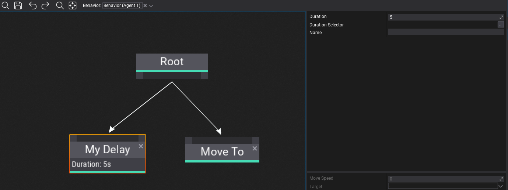

HOWTO: Create a custom Behavior Tree node

Behavior Trees are very extensible meaning you can create own node types in your game project or use the ones from engine and plugins. Each node can define custom logic, contain properties and store runtime state (per-instance).
Warning
Please keep in mind that Behavior execution is done in async via Job System (Behavior.System).
Warning
Don't store any Behavior state in node properties but custom Node State data container (nodes are not instanced per behavior).
Custom delay node
Below is an example of a custom node that waits a specific amount of time before graph execution can continue to another node. It stores the time left value per-instance (data cached for each node, for each behavior using it).
using System.Runtime.InteropServices;
using FlaxEngine;
/// <summary>
/// Simple delay node.
/// </summary>
public class MyDelayNode : BehaviorTreeNode
{
// Node state container (allocated per active node, see InitState/ReleaseState)
[StructLayout(LayoutKind.Sequential)]
private struct State
{
public float TimeLeft;
public Actor ObjectRef;
}
/// <summary>
/// Delay duration (in seconds). Used only if DurationSelector is unused.
/// </summary>
public float Duration = 5.0f;
/// <summary>
/// Delay duration selector. If set Duration is unused.
/// </summary>
public BehaviorKnowledgeSelector<float> DurationSelector;
/// <inheritdoc />
public override int GetStateSize()
{
// Return size of the per-instance node memory to allocate
return GetStateSize<State>();
}
/// <inheritdoc />
public override void InitState(BehaviorUpdateContext context)
{
// Initialize state and assign it
var state = new State
{
TimeLeft = Duration,
ObjectRef = context.Behavior.Actor, // State can contain object references
};
if (DurationSelector.TryGet(context.Knowledge, out var duration))
state.TimeLeft = duration;
NewState(context.Memory, state);
}
/// <inheritdoc />
public override void ReleaseState(BehaviorUpdateContext context)
{
// Free node state (eg. object references)
ref var state = ref GetState<State>(context.Memory);
state.ObjectRef = null;
FreeState(context.Memory);
}
/// <inheritdoc />
public override BehaviorUpdateResult Update(BehaviorUpdateContext context)
{
// Decrement timer by the current update delta and keep running until it's above 0
ref var state = ref GetState<State>(context.Memory);
state.TimeLeft -= context.DeltaTime;
return state.TimeLeft <= 0.0f ? BehaviorUpdateResult.Success : BehaviorUpdateResult.Running;
}
#if FLAX_EDITOR
/// <inheritdoc />
public override string GetDebugInfo(BehaviorUpdateContext context)
{
// Editor-only debug text (shown under node title, can be multiline)
if (context.Knowledge)
{
ref var state = ref GetState<State>(context.Memory);
return string.Format("Time left: {0}s", state.TimeLeft);
}
// Context might not contain state at edit-time so display defaults
if (!string.IsNullOrEmpty(DurationSelector.Path))
return string.Format("Duration: {0}", DurationSelector);
return string.Format("Duration: {0}s", Duration);
}
#endif
}